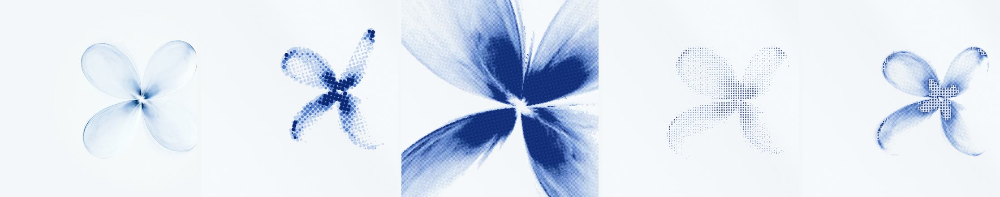
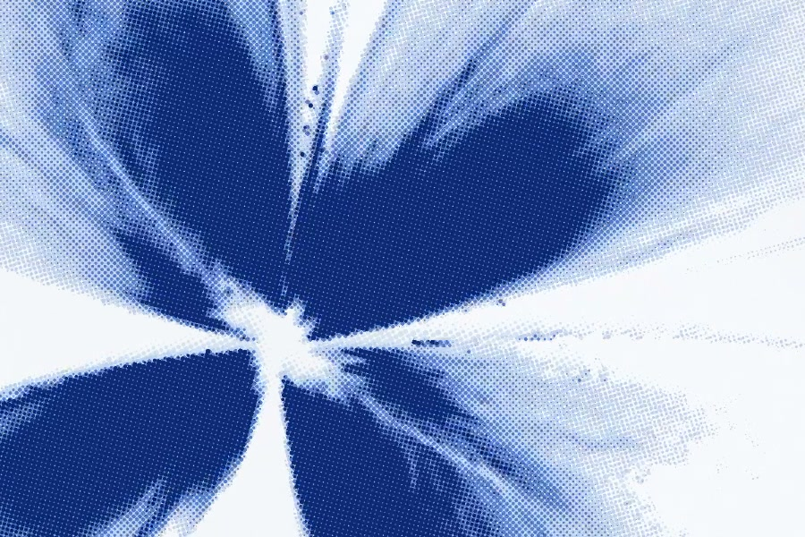

01A still, taught to move
Every pixel on screen asks one question: which point of the original photograph belongs here? Answering that in polar coordinates, around the flower’s heart, turns a flat image into something that can bend.
Each of the four petals owns a sector of the photograph. Inside its sector the mapping is rotated, compressed and stretched, so the petal can move while its texture, the fine veins and the translucent edges of the original, comes along untouched. Each petal makes four moves at once:
- SwingThe sector rotates about the heart.
- TurnThe sector narrows at mid-swing, so the petal reads as edge-on, the way a leaf turns in water.
- BendThe swing reaches the tip later than the base, curling every petal into an S.
- LagThe flower head travels a small closed arc; the petals, having mass, are dragged a beat behind it.
Depth is inferred rather than measured. Each petal tips toward or away from the viewer as it swings, petals in front cast a soft shadow on those behind, and the throat is darkened where the petals meet.
02Eighteen seconds
The motion is choreographed, not random. A single wave travels around the flower every six seconds, each petal a quarter-beat behind the last, and all four breathe open and closed on a nine-second cycle. Across the loop an envelope shapes the whole: gather, rest, one full flourish, settle. The tempo itself bends with it, faster in the flourish and slower at rest.
That was checked, not assumed. The ink field at second 0 and at second 18 was compared cell by cell across 132,000 cells: the largest difference is one step in 255, which is rounding.

03Printing it
The warped flower is first computed as an ink field, a small grid of how much ink each cell should carry. The grid remembers its last few frames and lets them fade, which leaves a faint afterimage wherever a petal has just passed, like a long exposure.
That field is then printed the way a press would print it: as three plates, each with its own screen angle, at 15°, 45° and 75°. Dot size follows the ink continuously (amplitude modulation), and where the plates overlap they form the rosettes you see in any magazine. Each plate sits a hair out of register, and the paper carries fibre grain and a slow mottle.
In ASCII mode the dots become characters. The glyphs are not ranked by hand: at load time each one is drawn and its actual pixel coverage measured, so the ramp from · to @ is honest in whatever typeface the browser has. Switching modes morphs between them: type appears first in the densest ink and spreads outward.

04Frame-exact export
Screen recording drops frames and depends on how busy the machine is. The first version recorded the canvas in real time, and a hidden browser tab was enough to stretch a nine-second film to twenty-four.
The export now renders every frame from a frame counter rather than a clock, encodes it with WebCodecs at an exact timestamp, and writes the MP4 container by hand, index first so it streams. A slow machine or a background tab changes how long the export takes, never what the film contains.
- Frames
- 16:9 · 4:5 · 1:1
- Takes
- 18 s loop · 9.4 s reel
- Codec
- H.264 High, 60 fps, 24 Mb/s
- Verified
- 1080 frames, 18.000 s, zero decode errors
05What was cut
Part of making it was deciding what to leave out.
A continuous sheet
Blending the four petal deformations into one smooth warp, the way a mesh is skinned to bones, removed the seams between sectors. It also smeared the heart into a dark knot. The seams turned out to be true to the photograph, where the petals really do meet at a point, and they stayed.
Type that pushes ink away
A soft clearance around the headline kept the dots off the letters. It read as a mask, a visible edge cutting a petal, and was removed: the flower is allowed to pass under the words.
Generative sound
A drone tuned to the breath, a bell each time a petal turned. It was built, measured and then taken out. The piece is quieter without it.